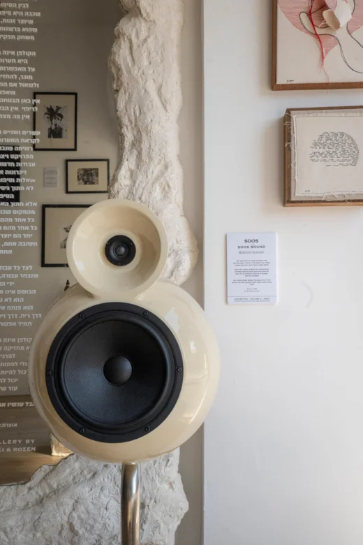

X הקולפן
soos.sound מגדיר מחדש את תפקידו של הצליל בתוך חלל. הסטודיו נוסד ומעוצב על ידי דן סרוסי, מעצב מוצר בעל תשוקה עמוקה ורגישות יוצאת דופן לעולם הסאונד.
במקום להסתיר את הרמקולים, הסטודיו מביא אותם אל קדמת הבמה והופך אותם לאובייקטים פיסוליים, המעצבים הן את הזהות הוויזואלית והן את הזהות האקוסטית של החלל.
בלב כל יצירה נמצא מערך אקוסטי שפותח בקפידה, שבו הצורה, החומר והמבנה הפנימי מתוכננים ביחס ישיר לביצועי הצליל.
soos.sound | מודל : Bella
www.soos.audio
הקולפן
X


